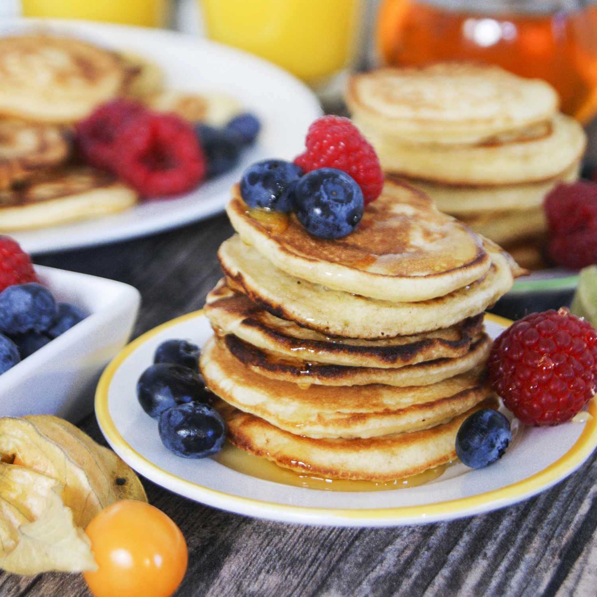

Tjocka och fluffiga amerikanska pannkakor! Receptet ger runt 20-25 små pannkakor. Passar bra med lönnsirap
och färska bär. Tillagningstid runt 30
minuter.

Ingredienser
2 msk smör
2,5 dl mjöl
2 tsk bakpluver
0,5 krm salt
2 msk strösocker
2,5 dl mjölk
1 ägg
Instruktioner
Smält smöret försiktigt, låt det svalna lite.
Blanda alla torra ingredienser i en bunke.
Vispa ner mjölk, smör och ägget i de torra ingredienserna. Blanda.
Stek ca 10 cm stora pannkakor i stekpanna, stek gärna med smör.
Stek tills pannkakorna har fått en fin färg på båda sidorna